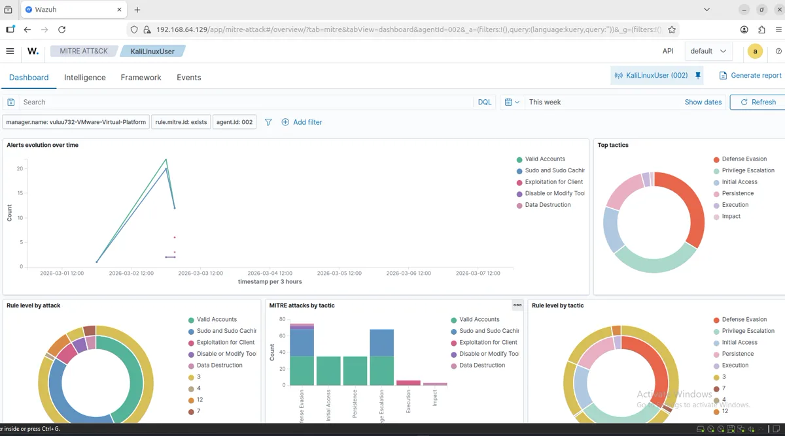
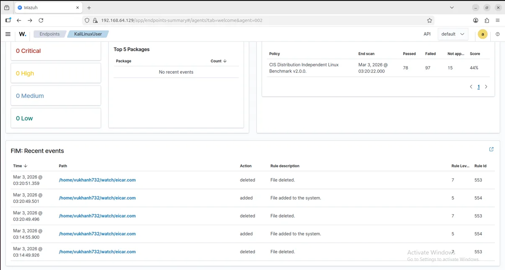
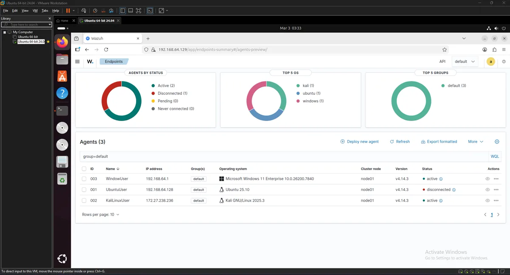
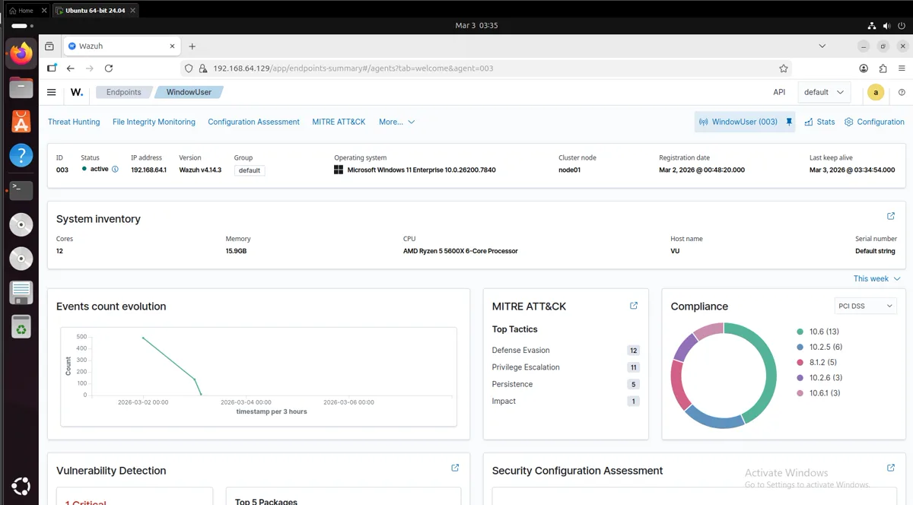
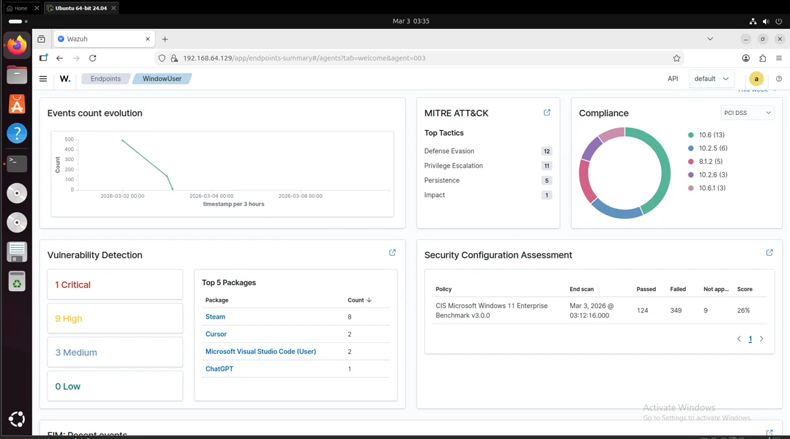
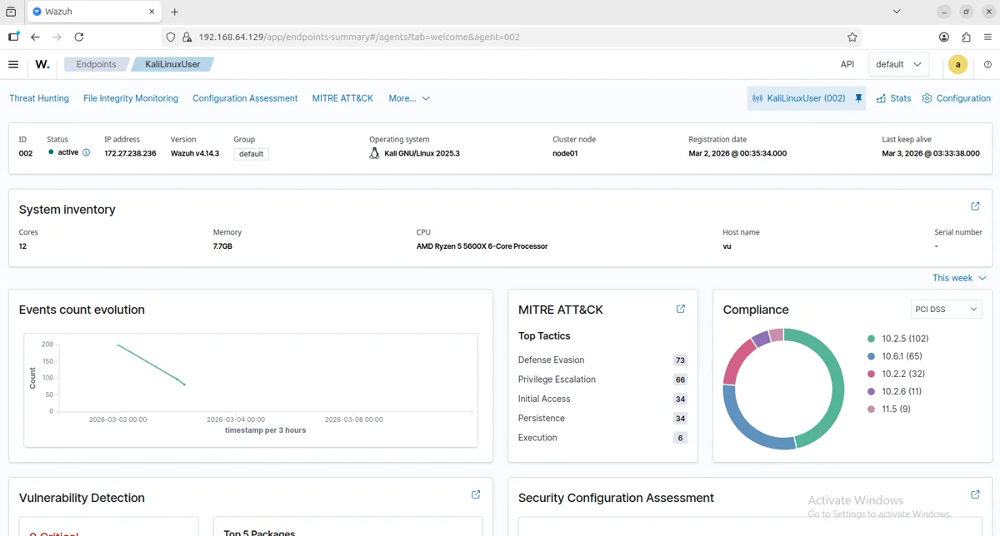

Wazuh-SOC-HomeLab
A multi-endpoint SOC lab where a VirusTotal hash-enrichment hit automatically triggers Active Response quarantine - no human in the loop between detection and containment.
Reading about SOC operations is different from running one. I built a multi-endpoint lab spanning Windows, Linux, and Kali hosts under VMware, with Wazuh as the central manager, to get hands-on with the full detect-enrich-respond loop.
Each endpoint runs a Wazuh agent reporting to a central manager. File Integrity Monitoring events on suspicious paths trigger a VirusTotal hash lookup; a positive match fires an Active Response rule that quarantines the file automatically.
Real screenshots from the live manager - MITRE ATT&CK tactic breakdowns, FIM events, and agent overviews.






Automated quarantine on a verified threat-intel hit shows I can build a response action that fires without waiting on an analyst - the exact loop a real SOC runs, just at home-lab scale.
The lab runs continuously across all endpoints, with the dashboards above pulled directly from the live manager - the clearest evidence on this whole site that the detection loop actually works end to end.